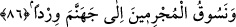
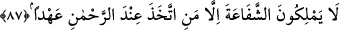

sıfatlarından olup ona yakışan cömertlik, lütuf, nimet vermek, ikram, bağış ve
yakınlaştırmadır.”
Eğer rahmet, zâtî sıfatlardan olursa bununla hayrı ulaştırma ve şerri bertaraf etme
irâdesi kasdedilir. Eğer fi‘lî sıfatlardan olursa bununla doğrudan hayra ulaştırma ve
şerri bertaraf etme kasdedilir. Bahru’l-ulûm’da böyle geçmektedir.
Hz. Ali (r.a.) demiştir ki: “Allâh’a yemin olsun ki muttakîler Allâh’ın huzûrunda
ayakta toplanmayacaklardır. Onlar binekleri üzerine binmiş vaziyette olacaklardır.
Bineklerinin eyerleri altından, eyerlerinin üst tarafları yakuttan, dizginleri zebercedden
olacaktır. Sonra da cennetin kapısını çalıncaya kadar Allah Teala onlara konuşacaktır.”
Kâşifî şöyle der: “Muttakîler, cennet develerine binerler. Yâni elçileri padişahın
sarayına ilettikleri gibi muttakîleri de mahşer gününde develeri üzerine binmiş bir halde
cennete iletirler. İmâm Kuşeyrî şöyle demiştir: ‘Bunlardan kimisi ibâdet ve tâatlerde
üstünlükleri üzerine biner gelirler. Kimisi de dünyada eyledikleri himmet ve hâlis
niyetleri üzerine binip gelirler. İbâdet bineklerine binenler cennet isterler ve onları
binekleri cennete iletir. Himmet bineklerine binenler ise Cenâb-ı Allâh’ı talep ederler,
onların muradları cennet olmayıp cemâl ve Allâh’ın rızâsıdır. Onlar Rahman’ın
rahmetinin yakınına dâvet edip götürürler. Şu halde cennet isteyen başkadır, Rahman’ı
isteyen başkadır.
Keşfu’l-esrâr’da nakledilir ki: “Mimşâd Dîneverî (r.h.) can vermek üzere iken bir
dervîş onun önünde durdu ve: ‘Ey Allahım, Mimşâd Dîneverî’ye rahmet eyle ve ona
cennetini ikrâm eyle’ diye duâ etti. Mimşâd Dîneverî o dervîşe: “Ey gâfil, otuz senedir
cennet şeref ve izzetiyle, hûrî ve köşkleriyle bana cilve yapıyor. Fakat ben, ona göz
ucuyla bile bakmadım. Şimdi ise kurb-i ilâhî dergâhına gidiyorum. Sen benim için boş
yere zahmet edip cenneti istedin.” dedi.
Dîdârı görmek için gerektir bana cennet bahçesi
Yoksa cemâl-i ilâhî, ne gerektir bana cennet bahçesi
86. Günahkârları da susuz olarak cehenneme süreceğiz.
“Günahkârları da” isyankârları hayvanların sürüldüğü gibi yaya ve “susuz olarak
cehenneme süreceğiz.” Çünkü suya giden kimse ancak susuz olduğu için gider. “el-
Vird” aslında suya yürümek demektir.